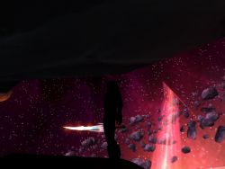

Joué par :
Mégi Joué par :
[ Information masquée ] Age : 25
Lieu de naisance : Astranaar
Signe de naissance : Faucon
Sexe : Femme
Race : Elfe
Faction : Alliance
Formation : Chasseur
Niveau : 60
Guilde : Penombrae Artisanat 1 : Artisant du cuir
Artisanat 2 : Dépeceur
Informations hrp : C'est une elfe assez complexée du au tache elfique sur son visage.Elle trouve ses horeilles trop longues enfin bref elle est assez mal dans sa peau.Mais apres elle une exellente chasseuse,un brin feignante et assez bordélique.Son prénom étant un peu long,tout le monde l'apelle Mégi(Mégui).
Description : Mégilenithil.C'est mon prénom.En commun cela donne:Epée de lune.Pour une chasseresse je sais pas si ça serait le bon prénom.
M'enfin...
Fleche-sang est mon nom. Ah cela me convient mieux. Remarque qui s'en souci.
Je n'ai pas d'ami d'enfance,Pas de parents.Orpheline depuis mes 5 ans.
De 5 ans passer a 10 ans sans en avoir les souvenirs ou trés peu.Je n'ai pas grand chose a retenir de ses années la.
Mais surtout la 5eme année de mon existence est l'année ou mon propre sang fut souillé.
Personne ne m'as sauvé...J'ai survaicut pourtant.Pourquoi je l'ignore.Surrement pas grace a Elune,notre grande Déesse si vénéré.
J'ai aujourd'hui 25 ans.
Mon sang n'est plus le meme.Ma vie non plus.
Je rejoind alors les ombres.Car elles seules sont venue m'aider.
Car elle me ressemble.Si sombre,Si noire.Comme mon sang.
Je me join a ma seule amie, Nectylia. Pour ses roses,rouges,blanches et noires.
Peut etre que la lumière est partit pour moi.Mais elle a oublié de me tuer.Seule les ombres m'ont fait vivres.La vengeance et l'amour m'attendent......Mais chut.Je ne suis pas censer le savoir.....
Sixième Ère [3]
Lune de la Force
Décade du Panda
Décade du Gorille
Décade de l'Ours
Lune d'Agilité
Décade du Tigre
Décade du Singe
Décade du Faucon
Lune de l'Esprit [3]
Décade de la Chouette
Décade de la Baleine [3]
Enfance...
Je suis née a Astrannaar.Enfin pas exactement la bas.A l'actuelle Satyrnaar.
Je suis née dans un Puit de Lune.Et ouais.C'est pas trés autorisé mais vu que ma mère était une pretresse ça aller.
Mon père, lui était un chasseur.Trés bon d'ailleur.Il avait quelque chose de spéciale avec ses betes.Il avait un ours et une trés belle panthère de Strangleronce.Il travailler a ironforge ou il éssayait de revendre la plupart du cuir qu'il pouvait se faire.Il gagner bien sa vie.Les affaires rentrées.
Ma mère était une pretresse d'Aile argent.Elle aussi elle gagnait bien sa vie.
On avait une assez grande maison avec notre puit-de-lune,celui la meme ou je suis née et il était rien qu'as nous.
Les 1er jours de ma vie furent surrement les plus beaux...Je vais donc vous conter mon histoire jusqu'a aujourd'hui.Mon enfance d'abord....Ma vie ensuite..
J'y arrive pas!
4eme année de vie> Mais j'y arrive pas!
Mégilenithil était assez petite encore.Elle ne mesurait pas un metre.Ses oreilles pendait encore le cartilage n'étant pas encore bien formé.Elle avait deja d'assez long cheuveux et savait tout juste parler.Elle tenait un arc dans la main.Son tout 1er arc.C'était juste une corde qui reliait deux batons,mais qui fonctionnait.
Ces parents,Daenethil et Shaïa Fleche-sang était des personnes respectables.Toujours bien habillés.
Il faisait nuit et la lune était résplendissante.Comme sa mère.La lumière de la lune se refletait dans ses yeux lui donnant un regard cristallin.Mégilenithil en a hérité.
-Papa j'y arrive pas!
Tout 1er arc,tout 1er tire...Daenithil aprennait a Mégi comment s'en servir.Elle n'était vraiment pas patiente.Mais vraiment pas.
-Tu vas y arriver.Met ton pouce ici,et ce doigt la.
-Mais je l'ai deja fait ça!
-Tend la corde.
-Gniiiiiiiii.
-Et lache.
Mégi l'avait trop tendu.Au moment de lacher les batons se brisèrent et la corde qui était tendu lui fouetta le visage.
-Aïïee heu heu
-Alalaaaah....chut vient dans mes bras.
-Elle est méchante la ficelle!
-Attend va voir Maman elle va te faire un bisou de lumière.
-Ouais! Maman! Maman!
Elle rentra dans la maison,allant demander son "bisou magique" a sa mère.Daenithil souriait.Si jeune enfant.Il pensait pouvoir en faire une Chasserese.Mais avec son caractère cela serait difficile.
-C'est l'heure d'aller se coucher Mégi.Lui dit sa mère.il se fait tard et tu es fatiguée.
-oui Maman.
Mégilenithil sauta sur son lit.
-Hep hep hep.tu n'oublie pas quelque chose mégi?
-Oh non j'ai pas envie.
-Aller on fait d'abord sa prière a la grande Dame.
Mégi et sa mère se dirigèrent vers le Puit de lune ou les attendait Daenithil.Ils se mirent tout trois a genou et commencèrent a prier en paix.Une fois terminer,Mégilenithil alla se coucher et s'endormit de les plus beaux reves que l'on peut faire lorsque l'on a 4ans et demi.....
Enfance...(Suite)
Mégilenithil dormait paisiblement.Ses reves devait etre magnifique.Sans guerre,sans souffrance joie et bonne humeur partout présent.
Shaïa et Daenithil dormait eux aussi...Enfin pas exactement.
Ils attendaient que Mégi dorme en faites.
Il était presque une heure du matin.La lune dans le ciel était resplendissante et illuminait toute la foret d'Ashenval.Le puit de lune en fesait de meme.Shaïa se leva la premiere.Elle était trés peu vétue,une simple robe blanche de soie trés fine.On pouvait voir a travers tellement l'habit était leger.
Daenithil se leva quelque minute apres seulement.Il se vetie d'un pantalon noir et d'une chemise noire.Des habit trés simple mais qui changeait des habits de cuir qu'il portait tout le temp.
Il se dirigeat vers le puit de lune dont l'eau brillait de plus en plus.Il avait laisser la porte ouverte et Mégi c'était réveillée.
Daenithil voyait son épouse,si belle,si attirante...
Elle lui dit:Je suis prete Daen.
Il lui prit la main et entrèrent dans le cercle du puit de lune,les pieds dans l'eau.
D'un seule coup l'eau devint extremement brillante,meme aveuglante.
Seule leurs silouhette se dessinaient a présent,trés faiblement,trés imprécis.
Mégi se trouvait juste a coté de la porte grande ouverte.Avec son "doudou" dans sa main gauche elle s'assit et regarda le puit de lune.
Elle ne voyait pas grand chose.Seulement les silhouette de ses parents.
Elle voyait alors comment ils l'ont construit...Et comment ils ont construit ce jour la sa petite soeur Maélestria.
Se qu'elle voyait a cette époque n'avait que peu de sens.C'est a 10 ans qu'elle réalisa se qu'il c'était passée réellement dans ce puit de lune....
Décade du Lapin
Septième Ère [2]
Lune de la Force [1]
Décade du Panda [1]
5 ans...et un démon...
5 ans....Mégilenithil avait 5 ans exactement aujourd'hui...5 Années de vie jusqu'a maintenan magnifique,sans probleme....
Ses parents étaient partis lui chercher son cadeau a Astranaar.C'est la bas qu'ils l'ont cachées pour qu'elle ne le trouve pas.
5 minutes d'absence suffirent...
La guerre fesait toujours rage au plus loin...La légion ardente fesant sont grabuge habituelle,la horde et l'alliance combattait ensemble dans des batailles épiques mémorables...
Mégilenithil ne savait rien de tout ça...Son esprit encore vide de toute guerre et de mal.
Elle se trouvait devant la porte de sa maison,regardant ses parents partir pour Astranaar.
-Rentre a l'intérieur et ne bouge pas!Tu ferme bien la porte,Lui avait dit Shaïa avant de partir avec Daenithil,Tout deux main dans la main.
Mégi s'éxecuta.Elle grandissait a vue d'oeil.Elle ferma la porte et abaissa le petit verrou.
Elle n'eu que deux minutes a attendre...Des coups se firent entendre...Elle aurait du se méfier...mais elle n'avait que 5ans...
Elle ouvra la porte folle de joie.Elle n'avait pas preter attention a cette silhouette totalement inconnue.Elle c'était jeter dans les bras de cette chose...
La légion ardente fesait son grabuge habituelle,La horde et l'alliance combattait ensemble dans des batailles épiques mémorables...Mais certeinsdémons passaient les lignes de défense...S'engoufrant parfois jusquedans la foret d'Elwynn,Dun morogh et meme Ashenvale...Mégi venait en faites de rencontrer l'un deux...une succube bléssée.
Mégi ouvra les yeux.Sa joie était partit aussi vite quel n'était venue et fut remplacée par l'horreur...Elle recula,regarda ses mains...Elles étaient couvertes d'un song noir.La succube était trés mal en point.Elle ne survivra pas.
Mégilenthil poussa un cris suraïgue.La succube la fixait,avec une réspiration dés plus désagréable a entendre.Elle avait une lame avec une aura de ténèbres dessus.Mégi était comme pétrifiée.Elle avait peur et étrangement la succube semblait inoffensive,elle avait un visage doux,sensuel,d'une assez grande beautée.
Il y avait un couteau sur la table à manger,planté dans un fromage.Mégi le vit et se déplaça lentement vers ce couteau sans quitter du regard la succube qui la fixait.Le démon saignait,son sang coulait sur sa lame.
Mégi prit le couteau,mais elle n'avait pas été assez rapide.La succube avait deja frapée,mais elle avait frapée sur son bras laissant une entaille dans le bras de Mégi.La douleur fut tellement grande pour elle qu'elle s'était évanouhit.La succube elle était morte juste aprés avoir attaquée,Comme une dernier effort avant de mourir.
Les deux saignait,Leurs sangs s'entre-mélaient,la lame du démon encore dans le bras de mégi.
Elle dormait,dans un sommeil sans rève.Les ténèbres l'envahissait petit a petit...
5 minutes avaient suffits pour que le drame arrive.5 minutes seulement...
Décade du Gorille
Décade de l'Ours
Lune d'Agilité
Décade du Tigre
Décade du Singe
Décade du Faucon
Lune de l'Esprit [1]
Décade de la Chouette
Décade de la Baleine [1]
Aprentissage...
Fin du reve....
-Mégiiii........
Une douce voix l'apellait.Une voix féminine emplie de chaleur.
-Méégiiiii.....
Elle se fesait du plus en plus forte.Elle ne semblait qu'etre qu'un chuchotement au début mais la elle avait distinctement augmentée de volume.
-Mééégiiii....
La douce voix se transformais.Elle devenait de moin en moin douce.Mégi se sentait tirée par cette voix.Elle ne voyait rien.Tout étais blanc....
-MEGILENITHIL FLECHE-SANG!
Mégi se reveilla soudain le visage du pretre d'Elune,Wizmard face à elle.Les autres élèves la regardaient également.Quelque rire s'échappaient doucement.Wizmard était assez réputé pour etre un maître Pretre relativement sévère.Maélestria ,assise a coté d'elle, avait essayer de la réveiller avant mais rien n'y pus,Mégi avait un sommeil de plomb,sauf lorsque que Wizmard la reveillait.
-Encore dans votre rève d'émeraude n'est ce pas? Dit Wizmard avec une grande ironie dans sa voix.Et si vous nous parliez un peu de votre rève?Je suis certein que la classe et les élèves ici présent serait heureux de l'entendre.
Mégi ne dit mot.Elle s'était fait avoir,encore une fois,elle savait qu'il valait mieux se taire.Le moindre mot rendait Wizmard d'une couleur écarlate qui virait au violet.Il est vrai que Celui ci est aussi connue pour ces exces de colère intempestif.
Son visage visage était assez rond et bosselé avec un nez en forme de patate.Le genre de nez qu'il vaut mieux cacher.Malgré ce visage un peu bizarre,il en ressortait néanmoin une sévérité exemplaire.Une baguette de bois dans une main,une espece de craie dans l'autre tels étaient ses armes sur son champ de bataille contre l'echec de l'aprentissage des soins,de la lumière et de la vénération d'Elune.
-Vous reviez au moins?Moi je ne pense pas.Vous FLANIEZ plutot.
Mégi regardait le bureau devant elle.Presque se laissant faire.
-On en parle pas a se que je voit.Meme un sort de silence ne serait pas aussi efficasse par rapport a votre silence.Votre main je vous prie.
Mégi tendit sa main vers la professeur.
-Veuillez relever la manche de votre robe.
Mégi s'éxécuta.Quelque trace violette était bien visible sur son poignet.Wizmard allait appliquer sa sentence.Dix coups de baguettes pour dormir pendant son enseignement de la lumière.Dans la classe il n'y avait plus un bruit, a par celui du claquement de la baguette sur le poignet de Mégi.
Une larme coula sur sa joue.Elle était lumineuse comme ces yeux.Elle tomba alors sur son parchemin,qui d'ailleurs était totalement vierge d'écriture,mais deja plein de souffrance.
-Que cela vous serve de leçon une fois encore Dame Flèche-Sang.J'aimerais d'ailleurs vous voir pendant la pause.Bien....Ou en étais je?
Une main se leva.
-Nous en étions au au chapitre 2 des "Liaisons du prêtre des ombres" Monsieur.Dit un élève du meme age que Mégi.
-Alors continuons.Comme je vous le disais l'ombre et le sacré pour un prêtre peuvent etre réunit pour.....
Mégi n'écoutait deja plus.Elle se préoccupait plutot de la douleur de son poignet le frottant doucement,puis essaya de se concentrer sur les mots qui sortaient de la bouche de Wizmard et des quelques mots doux de sa soeur qui éssayait de la consoler.Ce n'était pas du tout le 1ere fois que cela arrivait.Par contre la demande du Maïtre pour le rejoindre pendant la pause l'inquiètais un peu plus.D'habitude elle s'en sort(é) avec de simples corvées et autre punitions désagréables dont elle avait depuis un petit moment l'habitude;mais la,une convocation,seule à seule, avec Wizmard,c'était bien la première fois.
Ombre,Lumière,Elune....Ce sont les seuls mots qu'elle avait retenue du cour.Celui-ci terminé,elle disposait de deux heures,dont cinq minutes de retard,avant son prochain cours.Mégi et Maélestria n'avait pas une super réputation.C'était presque les deux intruses.On se demanait,en douce, se qu'elles fesaient la.Jamais rien de méchant.Mais elles réstaient toujours toutes les deux unis.Elles se promenaient parfois un peu dans pendant les pauses,allant voir les dresseurs de Sabres-de-givres.Mais il y avait un passage obligatoire.Le terrain des apprentis chasseur et chasseresse.Mégi voulait bien plus être avec eux que dans les salles de l'Enclave cénarienne,en train d'apprendre des sorts stupide permettant de soigner des égratignures.Mais surtout,il y avait Fÿlim,un jeune chasseur,du meme age et de la meme taille que Mégi.Elle l'observait de loin ses yeux le fixant incessamment.Parfois,pendant les entrainement,les chasseurs s'entrainer sur des cibles et le regard de Mégi déconcentré trés souvent l'archer qui ,de ce faite, ratait totalement sa cible......
(Veuillez m'excuser pour les fautes d'othographe énorme que j'ai pusfaire )